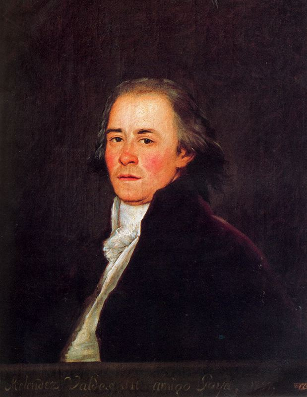

Lo único que se sabe es que es la primera parte del secreto final.
101000 0x19 59.298
34.047863,100.619655
https://es.wikipedia.org/wiki/Nuez_(fruto)
https://es.wikipedia.org/wiki/Naranja
https://commons.wikimedia.org/wiki/File:Teku_glass.jpg
https://es.wikipedia.org/wiki/Dale
https://es.wikipedia.org/wiki/Imaginaci%C3%B3n
https://es.wikipedia.org/wiki/Koutammakou
https://es.wikipedia.org/wiki/Alabama
One thousand douloureux ayes föraktade
http://dle.rae.es/?id=CnImwNB
-(sqrt(x) + y * 0.375) + 0.020702077
donde x e y son valores conocidos